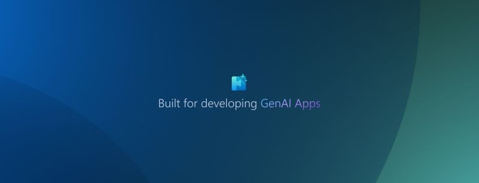

¡Nueva actualización del AI Toolkit para VS Code! 🛠️🧑💻
Microsoft ha lanzado la actualización de marzo, incorporando mejoras significativas para desarrolladores de IA:
Nuevas funcionalidades: - Tutoriales de ingeniería de prompts: Accede a técnicas comunes directamente desde el catálogo de la interfaz.📚 - Comparación de respuestas en Playground: Evalúa y ajusta modelos comparando sus salidas en paralelo.⚖️ - Modo “Think” para Claude 3.7 Sonnet: Mejora el razonamiento en tareas complejas con esta nueva función.🧠
Nuevos modelos incorporados: - Llama, DeepSeek R1 y Mistral Nemo: Disponibles a través de Nvidia NIM para Windows en PCs con RTX AI.💻 - QwQ vía Ollama: Modelo de la serie Qwen enfocado en razonamiento estructurado.🧩 - GPT-4.5 de OpenAI: Optimizado para interacciones más naturales y fluidas.🤖 - DeepSeek v3 vía GitHub: Destacado en tareas de codificación, matemáticas y razonamiento.🔢 - DeepSeek R1 Modelos 7B y 14B vía ONNX Runtime: Ofrecen opciones adicionales para desarrolladores.🛠️
Mejoras incrementales:
- Playground: Copia respuestas de modelos y regenera salidas con diferentes modelos para iteraciones rápidas.🔄
- Catálogo de modelos: Acceso rápido a modelos populares y filtros basados en capacidades específicas.📂

📌Para más detalles, consulta el anuncio oficial: https://lnkd.in/eXe25cDf